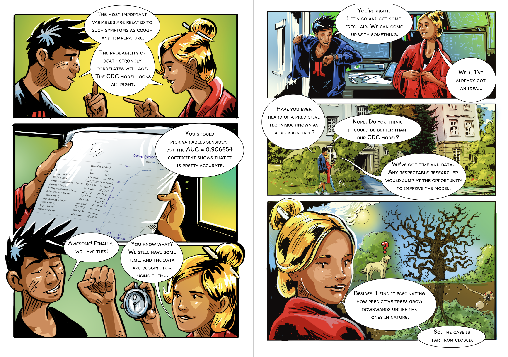
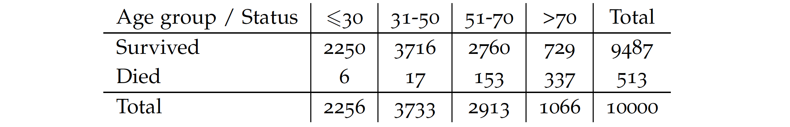
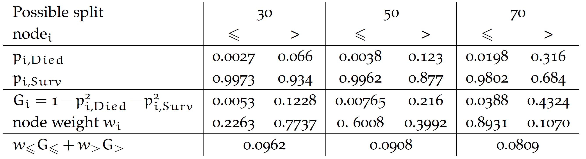
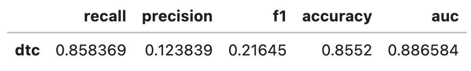
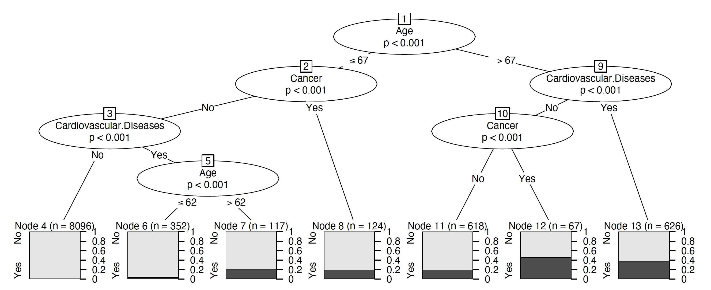
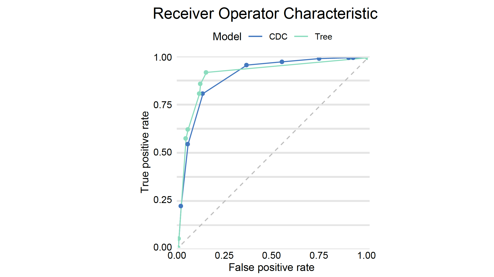

from sklearn import tree
model_dtc = tree.DecisionTreeClassifier(max_depth=3,
ccp_alpha=0.0001, random_state=0)
model_dtc.fit(covid_spring.drop("Death", axis=1),
covid_spring.Death)Step 3. Grow a tree

There are hundreds of different methods for training machine learning models available to experienced data scientists. One of the oldest and most popular are tree-based algorithms, first introduced in the book Classification And Regression Trees (Breiman et al. 1984) and commonly called CART. Here is the general deescription for this class of algorithms.
Breiman, L., J. H. Friedman, R. A. Olshen, and C. J. Stone. 1984. Classification and Regression Trees. Monterey, CA: Wadsworth; Brooks.
- Start with a single node (root) with a full dataset.
- For a current node, find a candidate split for the data in this node. To do this, consider every possible variable, and for each variable, consider every possible cutoff (for a continuous variable) or a subset of levels (for a categorical variable). Select the split that maximizes the measure of separation (see below).
- Check a stopping criteria like the minimum gain in node purity or depth of a tree. If the stopping criteria are met, then (obviously) stop. Otherwise, partition the current node into two child nodes and go to step 2 for each child node separately.
There are two crucial choices here. The first one is the measure of separation. We illustrate it by considering splits of the Age variable for our dataset. For practical reasons, let’s consider four groups.

For a categorical random variable with probability \(p_c\) for class \(c\) entropy is defined as
\(H = - \sum_c p_c \log_2 p_c\),
while the Gini impurity
\(G = 1 - \sum_c p_c^2\).
The Gini impurity for the root node in our example is 0.0973.
We consider three splits for cutoffs of 30, 50, and 70. For each split, we calculate the probability of death and survival in that group. We then calculate the purity of each of the resulting nodes. In the example below, the Gini value is used, but entropy or statistical tests are also commonly used. The final split purity is defined as the weighted node purity considering the number of observations at each node. The smaller the value, the better. From the options below, we get the best purity for a cutoff of 70 years.

The second key parameter for training a tree is the choice of the stopping criterion. Each split increases the purity of subsequent nodes, so the deeper the tree, the higher purity of leaves. Thus, large (deep) trees extract more relations from data, although some may be accidental (a phenomenon called over-fitting), which may result in poorer generalisation and worse results on new/validation data. In the examples below, we define the stopping criterion by tree depth (in the example for Python) and separability in a node (in the example for R).
Python snippets
The most common way to train a decision tree in Python is by using the DecisionTreeClassifier class from sklearn.tree module. Scikit-learn provides a robust and user-friendly implementation of decision tree algorithms. The training process typically involves two steps: (1) create an instance of the decision tree classifier specifying any desired hyperparameters like tree’s depth, splitting criteria, and other aspects of the learning process, (2) train the decision tree model to the training data using the fit method.
Trained model can be plotted with the plot_tree method.
plt.figure(figsize=(14,7))
_ = tree.plot_tree(
model_dtc,
feature_names=covid_spring.columns
)
In order to use dalex pipeline we need to turn the model into the Explainer.
explainer_dtc = dx.Explainer(
model=model_dtc,
data=covid_summer.drop("Death", axis=1),
y=covid_summer.Death,
label='dtc'
)As before, we can calculate the performance of the model with the method model_performance. Here on the test data the performance is lower than for the previous model.
performance_cdc = explainer_dtc.model_performance(cutoff = 0.1)
performance_cdc.result
Let’s add the AUC curve for the decision tree, to the curve obtained from the previous model.
performance_cdc.plot(performance_dtc, geom="roc")
R snippets
There are many libraries in R for training decision trees. The following snippets are based on the partykit (Hothorn and Zeileis 2015) library because it works for regression, classification and survival models and it also has good statistical properties and clear visualizations.
Hothorn, Torsten, and Achim Zeileis. 2015. “partykit: A Modular Toolkit for Recursive Partytioning in R.” Journal of Machine Learning Research 16: 3905–9.
In this package, statistical tests are used to evaluate separation for a split. In the example below, \(\alpha = 0.0001\) means that nodes will be split as long as the p-value is below \(0.0001\) for the \(\chi^2\) test for independence.
To train a tree, we use ctree function. The first argument is a formula describing which variable is the target and which are the explanatory variables. The second argument indicates the training data. The control argument specifies additional parameters such as node splitting criteria, maximum tree depth or maximum node size.
library("partykit")
tree <- ctree(Death ~., covid_spring,
control = ctree_control(alpha = 0.0001))
plot(tree)The explain function builds a uniform interface to query the model. Note that the predict_function is different than for CDC model, it is specific to party objects. The subsequent arguments indicate the test data for the explain count, model type and label.

model_tree <- DALEX::explain(tree,
predict_function = function(m, x)
predict(m, x, type = "prob")[,2],
data = covid_summer,
y = covid_summer$Death == "Yes",
type = "classification", label = "Tree")Once the explainer is prepared, we can check how good this model is. It looks like it is better than the CDC model both on the training and validation data.
(mp_tree <- model_performance(model_tree, cutoff = 0.1))
# Measures for: classification
# recall : 0.8626609
# precision : 0.1492205
# f1 : 0.2544304
# accuracy : 0.8822
# auc : 0.9136169And finally we plot both ROC curves.
plot(mp_tree, mp_cdc, geom="roc")